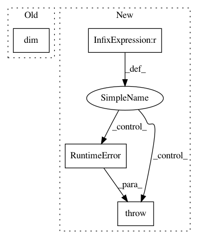

979b8c9efa551e8c948a4aca145367a2d87ac8d6,gpytorch/distributions/multitask_multivariate_normal.py,MultitaskMultivariateNormal,rsample,#MultitaskMultivariateNormal#Any#Any#,95
Before Change
"of self.mean. Expected ...{} but got {}".format(self.loc.size(), base_samples.size())
)
sample_shape = torch.Size(tuple(base_samples.size(i) for i in range(base_samples.dim() - self.mean.dim())))
base_samples = base_samples.view(*sample_shape, *self.loc.shape)
samples = super(MultitaskMultivariateNormal, self).rsample(sample_shape=sample_shape, base_samples=base_samples)
After Change
// Make sure that the base samples agree with the distribution
mean_shape = self.mean.shape
base_sample_shape = base_samples.shape[-self.mean.ndimension() :]
if mean_shape != base_sample_shape:
raise RuntimeError(
"The shape of base_samples (minus sample shape dimensions) should agree with the shape "
"of self.mean. Expected ...{} but got {}".format(mean_shape, base_sample_shape)
)
sample_shape = base_samples.shape[: -self.mean.ndimension()]
base_samples = base_samples.view(*sample_shape, *self.loc.shape)
samples = super().rsample(sample_shape=sample_shape, base_samples=base_samples)
In pattern: SUPERPATTERN
Frequency: 3
Non-data size: 4
Instances
Project Name: cornellius-gp/gpytorch
Commit Name: 979b8c9efa551e8c948a4aca145367a2d87ac8d6
Time: 2019-02-26
Author: balandat@fb.com
File Name: gpytorch/distributions/multitask_multivariate_normal.py
Class Name: MultitaskMultivariateNormal
Method Name: rsample
Project Name: cornellius-gp/gpytorch
Commit Name: c4b2d405f87cb13678222124d35dc3e55a04612e
Time: 2019-07-16
Author: jake.gardner@uber.com
File Name: gpytorch/models/deep_gps/deep_gp.py
Class Name: AbstractDeepGPHiddenLayer
Method Name: __call__
Project Name: cornellius-gp/gpytorch
Commit Name: c517e0b8b34a85b8142b4669c152b6e62c02d8e2
Time: 2019-03-18
Author: gpleiss@gmail.com
File Name: gpytorch/lazy/lazy_tensor.py
Class Name: LazyTensor
Method Name: expand